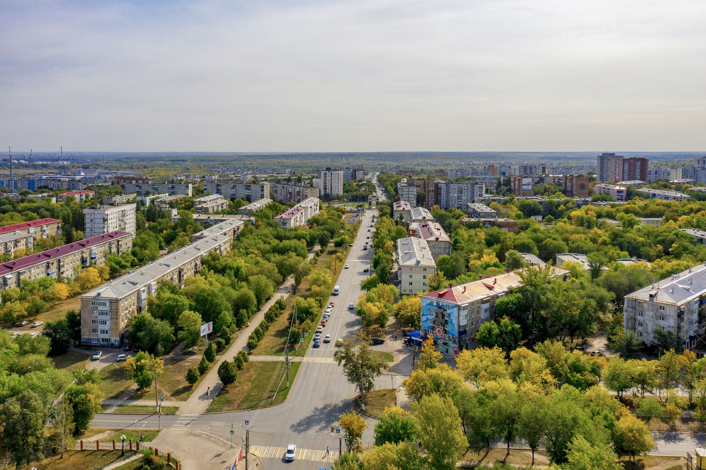
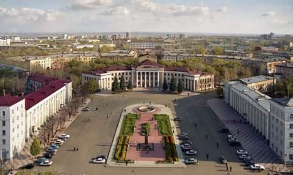
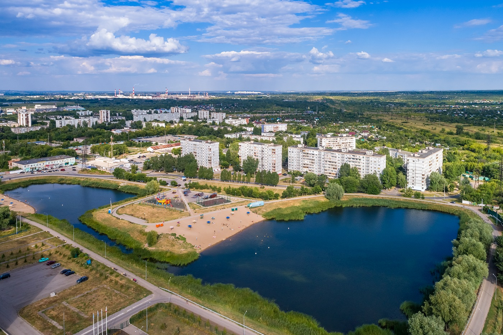
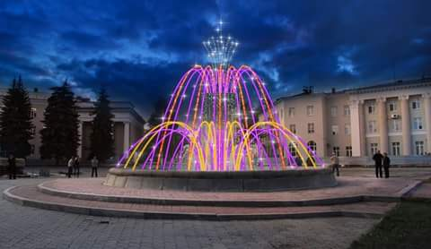

☣️ НОВОКУЙБЫШЕВСК.РФ ☣️
💥 ОБЩЕГОРОДСКОЙ КЛИКЕР ЭВОЛЮЦИИ
1 человек = 1 клик. Жми, чтобы вытащить дизайн из свалки!
Зафиксировано кликов: 0
ТЕКУЩИЙ СТАТУС: Уровень 0 (Адовый мусор из 2000-х)
Добро пожаловать в промышленную сказку!
Новокуйбышевск — уникальное место, где туман состоит из химикатов, а свежий воздух — это городской миф. Этот сайт сделан без цензуры, без соплей администраций и без попыток украсить реальность.
Переходи по вкладкам в меню, чтобы прочитать про то, как вымирает город, в каких школах ломают психику и где в городе самые токсичные зоны.
ДИНАМИКА НАСЕЛЕНИЯ (1952 – 2026)
Статистика изменения численности жителей с момента основания города:
| Год | Население (чел) | Исторический контекст |
|---|---|---|
| 1952 | ~15 000 | Начало активного строительства нефтеперерабатывающего завода и рабочего поселка. |
| 1959 | 62 700 | Массовый приток специалистов и рабочих со всего СССР на новые предприятия. |
| 1970 | 103 700 | Период активной urban-застройки и расширения промышленного узла. |
| 1989 | 113 000 | Исторический пик численности населения Новокуйбышевска. |
| 2002 | 112 900 | Начало стагнации демографических показателей. |
| 2010 | 108 400 | Нарастающий естественный убыль и отток молодежи в крупные города. |
| 2021 | 98 300 | Потеря статуса города-сотысячника согласно данным Всероссийской переписи. |
| 2026 | ~93 000 | Продолжение постепенного снижения численности населения. |
ОБРАЗОВАТЕЛЬНЫЕ УЧРЕЖДЕНИЯ ГОРОДА
Краткая справка по ключевым школам и их текущему состоянию:
Школа №1 (Основана в 1952 г.)
Первое общеобразовательное учреждение города. Здание требует систематического капитального ремонта, а материально-техническая база устарела.
Школа №3 (Основана в 1954 г.)
Одно из старейших учебных заведений. Отличается высокой плотностью классов и строгим дисциплинарным режимом.
Школа №6 (Основана в 1958 г.)
Расположена в непосредственной близости к промышленным зонам, что регулярно сказывается на качестве воздуха на прилегающей территории.
Школа №8 (Основана в 1962 г.)
Типовое советское здание. Спортивная инфраструктура и дворовая территория требуют комплексного обновления.
Гимназия №1 / Школа №7 (Основана в 1974 г.)
Учреждение с повышенными требованиями к успеваемости, при этом инженерные коммуникации и туалетные блоки давно требуют модернизации.
ЛОКАЦИИ ГОРОДА (ВИД С ВЫСОТЫ)
Парк Победы

Крупнейшая зелёная зона города, расположенная между жилыми массивами и промышленным сектором.
Центральная Площадь Ленина

Административный центр города. Открытое пространство из бетона и плитки, место проведения городских мероприятий.
Озеро Сакулино

Природный водоём в черте города. Популярное место отдыха жителей в летнее время.

Площадка перед дворцом культуры с вечерней подсветкой водоёма.
ДАТЧИК СУМРАЧНОЙ БУРМАЛДЫ
ПРАВИЛА И РЕАЛИИ ГОРОДА
- Ночные сбросы на промзоне. Горение факелов — штатный процесс утилизации газов, а не аварийная ситуация.
- Контроль проветривания. В безветренную погоду и при штиле рекомендуется держать окна закрытыми из-за скопления выбросов в нижних слоях атмосферы.
- Специфика водоснабжения. Качество и запах водопроводной воды напрямую зависят от состояния городских очистных сооружений и износа сетей.
- Транспортная миграция. Значительная часть населения ежедневно ездит на работу и учебу в Самару из-за ограниченного местного рынка труда.
- Технические сбои. Проблемы в работе инфраструктуры и сервисов — обычное следствие высокого износа городских систем.
📈 ЭТАПЫ ОЧИСТКИ САЙТА
- ❌ 0 – 24 кликов: сайт топ уровня .
- 🔒 25 кликов: Уровень 1 — Выпилим мигающие кислотные цвета, поставим нормальный фон.
- 🔒 100 кликов: Уровень 2 — Уберем уродские шрифты Comic Sans, сделаем нормальную сетку.
- 🔒 500 кликов: Уровень 3 — Полная превращение в стильный современный тёмный портал.